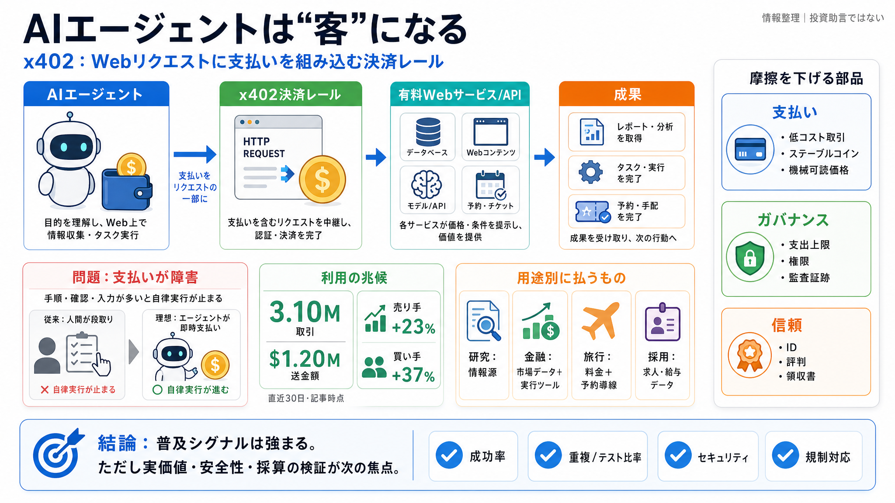

x402 Protocol Transaction Volume, AI Payments & Ecosystem ...
x402 is an open payment protocol incubated by Coinbase and Cloudflare. It allows any web service to charge for access to…

x402 is an open payment protocol incubated by Coinbase and Cloudflare. It allows any web service to charge for access to…
Base says agent payments reached 3.1 million x402 transactions in 30 days. The network says agents are using Base to pay…
# x402 Foundation: How Coinbase and Cloudflare Are Building the Payment Layer for the AI Internet. For nearly three deca…
x402 brings frictionless, autonomous payments to APIs and AI agents. Catch the full deep dive into x402—complete with de…
Learn how this innovative payment protocol eliminates friction for machine-to-machine transactions and opens up new poss…